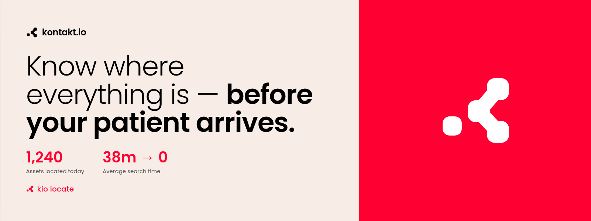
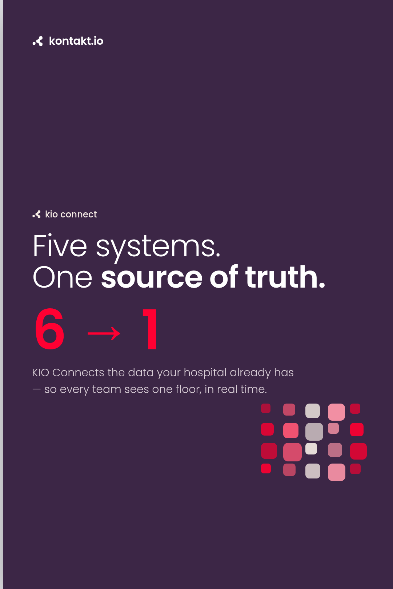
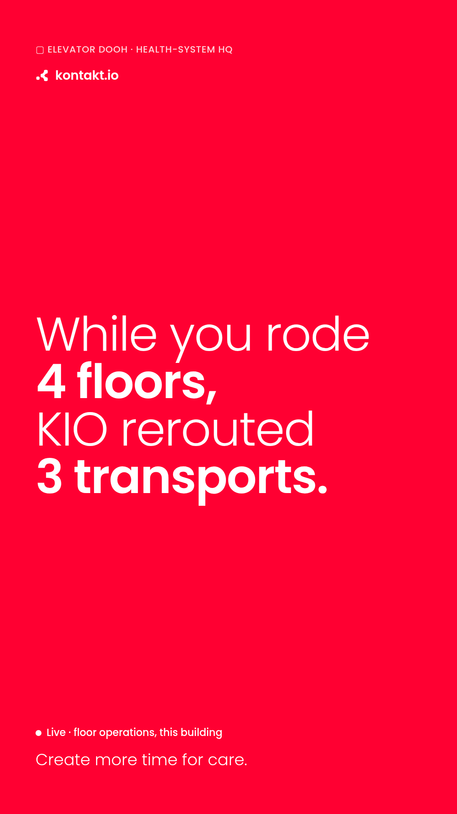
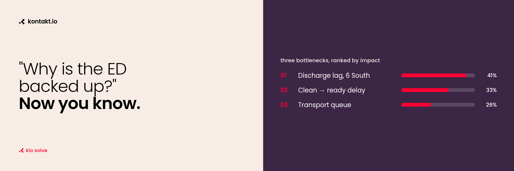

A second creative direction on the original ad formats, rebuilt to the Kontakt Identity Playbook: Poppins type, the Flame / Eclipse / Light-Pink palette, the Kontakt Frame mark and lowercase kontakt.io lock-up. Same calm voice, with a confident data layer underneath for the CIO who signs.



